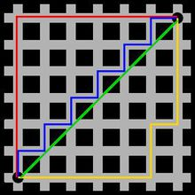

说明
此处主要使用scipy中的距离计算模块，scipy.spatial.distance
源码在这里 scipy距离计算源码
from scipy.spatial import distance数值向量距离
布雷柯蒂斯相异度（Bray-Curtis distance）
Bray-Curtis 相异度（Bray-Curtis dissimilarity）是生态学中用来衡量不同样地物种组成差异的测度。由J. Roger Bray and John T. Curtis 提出。其计算基于样本中不同物种组成的数量特征（多度，盖度，重要值等）。计算公式为：
$$\frac{\sum_{i = 1}^{n}|x_{i} - y_{i}|}{\sum_{i = 1}^{n}|x_{i} + y_{i}|}$$
x = [1, 2, 0]
y = [0, 1, 0]
dis = distance.braycurtis(x, y)
print(dis)0.5坎贝拉距离（Canberra distance）
Canberra distance是用来衡量两个向量空间的居间，1966年被提出，1977年被G. N. Lance和 W. T. Williams重新提出。是Manhattan distance的加权版本，Canberra distance已被用作比较排名列表和计算机安全中的入侵检测的测量。
$$\sum_{i = 1}^{n}\frac{|x_{i} - y_{i}|}{|x_{i}| + |y_{i}|}$$
x = [1, 2, 0]
y = [0, 1, 0]
dis = distance.canberra(x, y)
print(dis)1.3333333333333333切比雪夫距离（Chebyshev distance）
切比雪夫距离（Chebyshev distance）是向量空间中的一种度量，二个点之间的距离定义是其各坐标数值差绝对值的最大值。以数学的观点来看，切比雪夫距离是由一致范数（uniform norm）（或称为上确界范数）所衍生的度量，也是超凸度量（injective metric space）的一种。计算公式为
$$max_{i}|x_{i} - y_{i}|$$
下图是国际象棋棋盘上所有位置距f6位置的切比雪夫距离

x = [5, 3, 9]
y = [0, 1, 6]
dis = distance.chebyshev(x, y)
print(dis)5曼哈顿距离（Manhattan／cityblock distance）
曼哈顿距离（Manhattan Distance）是由十九世纪的赫尔曼·闵可夫斯基所创词汇，是种使用在几何度量空间的几何学用语，用以标明两个点在标准坐标系上的绝对轴距总和。曼哈顿距离的命名原因是从规划为方型建筑区块的城市（如曼哈顿）间，最短的行车路径而来（忽略曼哈顿的单向车道以及只存在于3、14大道的斜向车道）。任何往东三区块、往北六区块的的路径一定最少要走九区块，没有其他捷径。计算公式为：
$$\sum_{i}^{n}|x_{i} - y_{i}|$$
曼哈顿距离依赖坐标系统的转度，而非系统在坐标轴上的平移或映射。
如下图所示，红色表示曼哈顿距离，蓝色和黄色代表等价的曼哈顿距离。

x = [5, 3, 9]
y = [0, 1, 6]
dis = distance.cityblock(x, y)
print(dis)10相关系数距离（Correlation distance）
相关系数距离是1与相关系数的差，相关系数的定义为
$$\frac{(X - \overline{X})(Y - \overline{Y})}
{||(X - \overline{X})||_{2}||(Y - \overline{Y})||_{2}}$$
常见的Pearson相关性系数即为
$$\rho(X, Y) = \frac{E[(X - \mu_{X})(Y - \mu_{Y})]}{\sigma_{X}\sigma_{Y}}
= \frac{E[(X - \mu_{X})(Y - \mu_{Y})]}{\sqrt{\sum_{i = 1}^{n}(X_{i} - \mu_{X})}\sqrt{\sum_{i = 1}^{n}(Y_{i} - \mu_{Y})}}$$
Pearson相关距离为
$$D_{X, Y} = 1 - \rho(X, Y)$$
x = [5, 3, 9]
y = [0, 1, 6]
dis = distance.correlation(x, y)
print(dis)0.1175024967072299余弦相似度距离（Cosine distance）
余弦相似性通过测量两个向量的夹角的余弦值来度量它们之间的相似性。0度角的余弦值是1，而其他任何角度的余弦值都不大于1；并且其最小值是-1。从而两个向量之间的角度的余弦值确定两个向量是否大致指向相同的方向。两个向量有相同的指向时，余弦相似度的值为1；两个向量夹角为90°时，余弦相似度的值为0；两个向量指向完全相反的方向时，余弦相似度的值为-1。这结果是与向量的长度无关的，仅仅与向量的指向方向相关。余弦相似度通常用于正空间，因此给出的值为0到1之间。
余弦相似度定义来自于欧几里得点积，点积定义如下
$$X \cdot Y = ||X||\space||Y||\space cos(\theta)$$
余弦相似度为
$$cos(\theta) = \frac{X \cdot Y}{||X||\space||Y||}$$
余弦相似度距离为1与余弦相似度的差
$$1 - \frac{X \cdot Y}{||X||_{2}\space||Y||_{2}}$$
x = [5, 3, 9]
y = [0, 1, 6]
dis = distance.cosine(x, y)
print(dis)0.1261737770471213欧氏距离（Euclidean distance）
在数学中，欧几里得距离或欧几里得度量是欧几里得空间中两点间“普通”（即直线）距离。使用这个距离，欧氏空间成为度量空间。相关联的范数称为欧几里得范数。计算公式为
$$||X - Y||_{2}$$
二维空间中的欧氏距离
$$d = \sqrt{(x_{2} - x_{1})^{2} + (y_{2} - y_{1})^{2}}$$
三维空间中的欧式距离
$$d = \sqrt{(x_{2} - x_{1})^{2} + (y_{2} - y_{1})^{2} + (z_{2} - z_{1})^{2}}$$
n维空间中的欧式距离
$$d(X, Y) = \sqrt{\sum_{i = 1}^{n}(x_{i} - y_{i})^{2}}$$
x = [1, 0, 0]
y = [0, 1, 0]
dis = distance.euclidean(x, y)
print(dis)1.4142135623730951JS散度距离（Jensen-Shannon distance）
JS散度度量了两个概率分布的相似度，基于KL散度的变体，解决了KL散度非对称的问题。一般地，JS散度是对称的，其取值是0到1之间。定义如下：
$$JS(P_{1}||P_{2}) = \frac{1}{2}KL(P_{1}||\frac{P_{1} + P_{2}}{2}) = \frac{1}{2}KL(P_{2}||\frac{P_{1} + P_{2}}{2})$$
其中KL表示KL散度，KL散度又称为相对熵，信息散度，信息增益。KL散度是是两个概率分布P和Q差别的非对称性的度量。KL散度是用来度量使用基于Q的编码来编码来自P的样本平均所需的额外的位元数。典型情况下，P表示数据的真实分布，Q表示数据的理论分布，模型分布，或P的近似分布。计算公式为
$$KL(P||Q) = -\sum_{x \in X}P(x)log\frac{1}{P(x)} + \sum_{x \in X}P(x)log\frac{1}{Q(x)}
= \sum_{x \in X}P(x)log\frac{P(x)}{Q(x)}$$
因为对数函数是凸函数，所以KL散度的值为非负数。
有时会将KL散度称为KL距离，但它并不满足距离的性质：
- KL散度不是对称的
- KL散度不满足三角不等式
KL散度和JS散度度量的时候有一个问题：
如果两个分配P,Q离得很远，完全没有重叠的时候，那么KL散度值是没有意义的，而JS散度值是一个常数。这在学习算法中是比较致命的，这就意味这这一点的梯度为0。梯度消失了。
import numpy as np
from scipy import stats as sts
x = np.asarray([0, 2, 6])
y = np.asarray([0, 1, 6])
def JS_divergence(p, q):
M = (p + q) / 2
return 0.5 * sts.entropy(p, M) + 0.5 * sts.entropy(q, M)
dis = JS_divergence(x, y)
print(dis)0.009225640794865278马氏距离（Mahalanobis distance）
协方差矩阵记为$S$，则马式距离为
$$\sqrt{(X - Y)S^{-1}(X - Y)^T}$$
若协方差矩阵是单位矩阵（各个样本向量之间独立同分布）,则公式就成了
$$\sqrt{(X - Y)(X - Y)^T}$$
也就是欧氏距离了，若协方差矩阵是对角矩阵，公式变成了标准化欧氏距离。
M = (x + y) / 2iv = [[1, 0.5, 0.5], [0.5, 1, 0.5], [0.5, 0.5, 1]]
x = [2, 0, 0]
y = [0, 1, 0]
dis = distance.mahalanobis(x, y, iv)
print(dis)1.7320508075688772闵可夫斯基距离（Minkowski distance）
闵氏距离不是一种距离，而是一组距离的定义，将以下形式的距离都定义为Minkowski distance。
$$||X - Y||_{p} = (\sum_{i = 1}^{n}|x_{i} - y_{i}|^{p})^{\frac{1}{p}}$$
或
$$(\sum_{i = 1}^{n}w_{i}|x_{i} - y_{i}|^{p})^{\frac{1}{p}}$$
当$p=1$时，就是曼哈顿距离
当$p=2$时，就是欧氏距离
当$p \to \infty$时，就是切比雪夫距离
x = [2, 0, 0]
y = [0, 1, 0]
dis = distance.minkowski(x, y, 2)
print(dis)2.23606797749979标准欧式距离（standardized Euclidean distance）
标准化欧氏距离是针对简单欧氏距离的缺点（量纲差异）而作的一种改进方案，标准化方法为
$$X_{*} = \frac{X - \mu}{s}$$
变换后标准欧式距离为
$$\sqrt{\sum_{i = 1}^{n}(\frac{X_{i} - Y_{i}}{s_{i}})^{2}}$$
x = [1, 0, 0]
y = [0, 1, 0]
s = [0.1, 0.1, 0.1]
dis = distance.seuclidean(x, y, s)
print(dis)4.47213595499958平方欧式距离（squared Euclidean distance）
平方欧式距离是简单欧式距离每一项的平方，公式如下
$$||X - Y||_{2}^{2} = \sum_{i = 1}^{n}w_{i}|x_{i} - y_{i}|^{2}$$
x = [1, 0, 0]
y = [0, 1, 0]
dis = distance.sqeuclidean(x, y)
print(dis)2.0加权闵可夫斯基距离（Minkowski distance）
$$(\sum_{i = 1}^{n}|w_{i}(x_{i} - y_{i})|^{p})^{\frac{1}{p}}$$
x = [1, 0, 0]
y = [0, 1, 0]
dis = distance.wminkowski(x, y, 2, np.ones(3))
print(dis)1.4142135623730951搬土距离（Earth Mover distance）
Earth Mover distance，是基于运输问题的效率提出的一种直方图相似度量。它是归一化的从一个分布变为另一个分布的最小代价, 可以用来测量两个分布(multi-dimensional distributions)之间的距离。EMD运算复杂度较高，平均而言至少是二次方级别。但是它作为距离函数，有一个非常好的特点是存在下界，两个分布的质心之间的距离，因此在粗略计算时，可以考虑用分布质心之间的距离代替EMD。
$$\frac{\sum_{i = 1}^{M}\sum_{j = 1}^{N}d_{ij}f_{ij}}{\sum_{i = 1}^{M}\sum_{j = 1}^{N}f_{ij}}$$
from scipy.stats import wasserstein_distance
x = [3.4, 3.9, 7.5, 7.8]
x_w = [1.4, 0.9, 3.1, 7.2]
y = [4.5, 1.4]
y_w = [3.2, 3.5]
dis = wasserstein_distance(x, y, x_w, y_w)
print(dis)2.7x = [0.0]
x_w = [10.0]
y = [0.0]
y_w = [2.0]
dis = wasserstein_distance(x, y, x_w, y_w)
print(dis)0.0x = [0.5, 3.3881989165193145e-06, 0.007009673349221927, 2.7785622593068027, 2.7785622593068027, 1.0, 0.1480135071948422, 2.7785622593068027, 2, 0.0, 0.0, 0.02111525564774837, 0, 0, 3.3881989165193145e-06, 0.02111525564774837, 1.0, 0.02111525564774837, 0.28901734104046245, 0.0, 0, 0.0, 0.0, 1, 0.02111525564774837, 0.0, 3.3881989165193145e-06]
y = [0.8, 6.859405279689656, 0.0037439161362785474, 4020.4096644631295, 0.005439330543933054, 0.08928571428571429, 0.04654587589796659, 128609.0, 5, 0.7678571428571429, 0.03798619846624095, 0.24815204448802128, -0.017954805269944772, 0, 358.62096982747676, 13.421226391252906, -0.017857142857142856, -8.571428571428571, 0.1179245283018868, 0.028545153041402063, 0.06847760995576437, 0.5714285714285714, 0.0, 112, 358.62096982747676, 64.26004935863212, -1.2244897959183674]
wasserstein_distance(x, y)2.7布尔向量距离
Dice系数（Dice dissimilarity）
Dice系数是一种集合相似度度量函数，通常用于计算两个样本的相似度
$$\frac{2|X \bigcap Y|}{|X| + |Y|}$$
Dice距离为
$$1 - \frac{2|X \bigcap Y|}{|X| + |Y|} = \frac{C_{TF} + C_{FT}}{2C_{TT} + C_{TF} + C_{FT}}$$
x = [1, 0, 0]
y = [0, 1, 0]
dis = distance.dice(x, y)
print(dis)1.0汉明距离（Hamming distance）
两个等长字符串s1与s2之间的汉明距离定义为将其中一个变为另外一个所需要作的最小替换次数。
$$\frac{C_{01} - C_{10}}{n}$$
例如字符串’1111’与’1001’之间的汉明距离为2。（汉明距离也可计算离散的数值向量）
x = [1, 0, 0]
y = [0, 1, 0]
dis = distance.hamming(x, y)
print(dis)0.6666666666666666杰卡德差异（Jaccard-Needham dissimilarity）
两个集合A和B的交集元素在A，B的并集中所占的比例，称为两个集合的杰卡德相似系数。
$$\frac{|X \bigcap Y|}{|X \bigcup Y|}$$
杰卡德距离为
$$1 - \frac{|X \bigcap Y|}{|X \bigcup Y|} = \frac{C_{TF} + C_{FT}}{C_{TT} + C_{TF} + C_{FT}}$$
x = [1, 0, 0]
y = [0, 1, 0]
dis = distance.jaccard(x, y)
print(dis)1.0库尔辛斯基差异（Kulsinski dissimilarity）
$$\frac{C_{TF} + C_{FT} - C_{TT} + n}{C_{TF} + C_{FT} + n}$$
x = [1, 0, 0]
y = [0, 1, 0]
dis = distance.kulsinski(x, y)
print(dis)1.0田本罗杰斯差异（Rogers-Tanimoto dissimilarity）
$$\frac{R}{C_{TT} + C_{FF} + R}$$
其中
$$R = 2(C_{TF} + C_{FT})$$
x = [1, 0, 0]
y = [0, 1, 0]
dis = distance.rogerstanimoto(x, y)
print(dis)0.8拉塞尔差异（Russell-Rao dissimilarity）
$$\frac{n - C_{TT}}{n}$$
x = [1, 0, 0]
y = [0, 1, 0]
dis = distance.russellrao(x, y)
print(dis)1.0索卡尔米切纳差异（Sokal-Michener dissimilarity）
$$\frac{R}{S + R}$$
其中
$$R = 2(C_{TF} + C_{FT})$$
$$S = C_{FF} + C_{TT}$$
x = [1, 0, 0]
y = [0, 1, 0]
dis = distance.sokalmichener(x, y)
print(dis)0.8索卡尔雪差异（Sokal-Sneath dissimilarity）
$$\frac{R}{C_{TT} + R}$$
其中
$$R = 2(C_{TF} + C_{FT})$$
x = [1, 0, 0]
y = [0, 1, 0]
dis = distance.sokalsneath(x, y)
print(dis)1.0Yule差异（Yule dissimilarity）
$$\frac{R}{C_{TT} * C_{FF} + \frac{R}{2}}$$
其中
$$R = 2 * C_{TF} * C_{FT}$$
x = [1, 0, 0]
y = [0, 1, 0]
dis = distance.yule(x, y)
print(dis)2.0end~